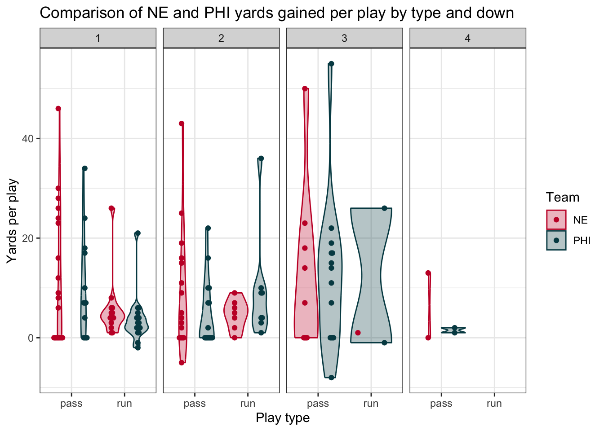

Super Bowl Analysis with nflfastR
Getting the data
In this example analysis, we’re going to examine Super Bowl LII to gain insight into how the Philadelphia Eagles beat the New England Patriots.
We start by loading the nflfastR package (you should
have downloaded it back in Lecture 5).
library(nflfastR)Next, we load the data. This Super Bowl took place in the 2017 NFL
Season, so we use the load_pbp() function to get the 2017
data.
pbp_2017 <- load_pbp(2017)This has loaded the entire play-by-play from the 2017 post-season
(including the Pro Bowl!). We’re going to filter this data down to the
Super Bowl only, which has the game_id of 2018020400. And
to make this simpler, we’re going to select only a subset
of the columns to work with
super_bowl_pbp <- pbp_2017 %>%
# Only grab the Super Bowl
filter(old_game_id == 2018020400) %>%
# First grab context about the play:
select(posteam, defteam, drive, qtr, down, ydstogo, yardline_100,
half_seconds_remaining, score_differential,
# Next data on the result:
desc, play_type, yards_gained, sp,
# Finally the advanced metrics:
ep, wp, epa, wpa)Team comparison
Now using this dataset, we can proceed to compare the performance and decision making of the Eagles and the Patriots. First what plays did they call?
super_bowl_pbp %>%
filter(play_type %in% c("pass", "run")) %>%
group_by(posteam, down, play_type) %>%
count()## # A tibble: 15 × 4
## # Groups: posteam, down, play_type [15]
## posteam down play_type n
## <chr> <dbl> <chr> <int>
## 1 NE 1 pass 20
## 2 NE 1 run 14
## 3 NE 2 pass 17
## 4 NE 2 run 7
## 5 NE 3 pass 9
## 6 NE 3 run 1
## 7 NE 4 pass 2
## 8 PHI 1 pass 13
## 9 PHI 1 run 17
## 10 PHI 2 pass 15
## 11 PHI 2 run 8
## 12 PHI 3 pass 14
## 13 PHI 3 run 2
## 14 PHI 4 pass 2
## 15 PHI NA pass 2We can directly plot the proportions for each team as side-by-side barcharts
super_bowl_pbp %>%
filter(play_type %in% c("pass", "run")) %>%
group_by(posteam, down, play_type) %>%
count() %>%
# Now let's remove that NA from the two point conversion:
filter(!is.na(down)) %>%
# Looking at counts really isn't appropriate, let's compare the proportions:
group_by(posteam, down) %>%
mutate(n_plays = sum(n),
prop_plays = n / n_plays) %>%
# Now actually create the chart!
ggplot(aes(x = play_type, y = prop_plays, fill = posteam)) +
geom_bar(stat = "identity", position = "dodge") +
facet_wrap(~down, ncol = 4) +
labs(x = "Play type", y = "Proportion of plays")
To make this better, we can use the actual team colors based on a
dataset from the nflfastR package. For the Patriots we’ll
use their secondary color #c60c30 and we’ll use the Eagles primary color
of #004953.
ne_color <- "#c60c30"
phi_color <- "#004953"
super_bowl_pbp %>%
filter(play_type %in% c("pass", "run")) %>%
group_by(posteam, down, play_type) %>%
count() %>%
filter(!is.na(down)) %>%
group_by(posteam, down) %>%
mutate(n_plays = sum(n),
prop_plays = n / n_plays) %>%
ggplot(aes(x = play_type, y = prop_plays, fill = posteam)) +
geom_bar(stat = "identity", position = "dodge") +
facet_wrap(~down, ncol = 4) +
scale_fill_manual(values = c(ne_color, phi_color)) +
labs(x = "Play type", y = "Proportion of plays",
fill = "Team",
title = "Comparison of Patriots and Eagles play-calling by down") +
theme_bw()
Let’s take a look at the performance of these plays by yards-gained:
super_bowl_pbp %>%
filter(play_type %in% c("pass", "run")) %>%
group_by(posteam, down, play_type) %>%
filter(!is.na(down)) %>%
# Now use the summarise function, generate the average yards gained:
summarize(yards_per_play = mean(yards_gained)) %>%
ggplot(aes(x = play_type, y = yards_per_play, fill = posteam)) +
geom_bar(stat = "identity", position = "dodge") +
facet_wrap(~down, ncol = 4) +
scale_fill_manual(values = c(ne_color, phi_color)) +
labs(x = "Play type", y = "Yards per play",
fill = "Team",
title = "Comparison of NE and PHI yards gained per play by type and down") +
theme_bw()
One number summaries toss out alot of information! Let’s view the entire distribution instead. One of the best ways to do this is with a beeswarm plot - which displays the actual individual points rather than smoothed summaries. We’ll display these points on top of violin plots which provide us with the general shape of the distributions
# install.packages("ggbeeswarm")
library(ggbeeswarm)
super_bowl_pbp %>%
filter(play_type %in% c("pass", "run")) %>%
filter(!is.na(down)) %>%
ggplot(aes(x = play_type, y = yards_gained, fill = posteam, color = posteam)) +
geom_violin(alpha = 0.3) +
# Display the individual points on top of the violin plots:
geom_beeswarm(dodge.width = 1) +
facet_wrap(~down, ncol = 4) +
scale_fill_manual(values = c(ne_color, phi_color)) +
scale_color_manual(values = c(ne_color, phi_color)) +
labs(x = "Play type", y = "Yards per play",
fill = "Team", color = "Team",
title = "Comparison of NE and PHI yards gained per play by type and down") +
theme_bw() ## Warning: Groups with fewer than two data points have been dropped.
Win probability impact
All yards are not created equal! We should really be looking at the impact in terms of win probability added (WPA) instead to get a better understanding of what impacted the game.
super_bowl_pbp %>%
filter(play_type %in% c("pass", "run")) %>%
filter(!is.na(down)) %>%
ggplot(aes(x = play_type, y = wpa, fill = posteam)) +
geom_violin(alpha = 0.3) +
geom_beeswarm(aes(color = posteam), dodge.width = 1) +
geom_hline(yintercept = 0, linetype = "dashed", color = "gray",
size = 1) +
facet_wrap(~down, ncol = 4) +
scale_fill_manual(values = c(ne_color, phi_color)) +
scale_color_manual(values = c(ne_color, phi_color), guide = 'none') +
labs(x = "Play type", y = "Win probability added (WPA)",
fill = "Team",
title = "Comparison of NE and PHI WPA by type and down") +
theme_bw()## Warning: Groups with fewer than two data points have been dropped.
Now we see a big difference between the Eagles and Patriots, especially on those fourth down passing attempts… which plays are those?
super_bowl_pbp %>%
group_by(posteam) %>%
filter(posteam == "PHI",
play_type == "pass",
!is.na(down)) %>%
arrange(desc(wpa)) %>%
select(desc, wpa, down, qtr) %>%
slice(1:3)## Adding missing grouping variables: `posteam`## # A tibble: 3 × 5
## # Groups: posteam [1]
## posteam desc wpa down qtr
## <chr> <chr> <dbl> <dbl> <dbl>
## 1 PHI (2:25) (Shotgun) 9-N.Foles pass short left to 86-Z.… 0.169 3 4
## 2 PHI (1:46) (Shotgun) 9-N.Foles pass short right to 30-C… 0.138 3 2
## 3 PHI (12:30) (Shotgun) 9-N.Foles pass short middle to 82… 0.126 3 1The number one play was the go-ahead TD pass which gave the Eagles the lead in the 4th quarter, while the second highest play was the famous Philly Special!
Win probability chart
Finally, we can wrap up this analysis with a win probability chart that shows the overall story of the game.
# Let's put this all together to display a win probability chart:
pbp_2017 %>%
# Only grab the Super Bowl
filter(old_game_id == 2018020400) %>%
filter(!is.na(home_wp),
!is.na(away_wp),
timeout == 0) %>%
select(game_seconds_remaining,
home_wp,
away_wp) %>%
# Rather than having separate columns for each team's win probability,
# we can gather them into one column:
gather(team, wpa, -game_seconds_remaining) %>%
ggplot(aes(x = game_seconds_remaining, y = wpa, color = team)) +
geom_line(size = 2) +
geom_hline(yintercept = 0.5, color = "gray", linetype = "dashed") +
scale_color_manual(labels = c("PHI", "NE"),
values = c(phi_color, ne_color),
guide = 'none') +
scale_x_reverse(breaks = seq(0, 3600, 300)) +
annotate("text", x = 3000, y = .80, label = "PHI", color = phi_color, size = 8) +
annotate("text", x = 3000, y = .20, label = "NE", color = ne_color, size = 8) +
geom_vline(xintercept = 900, linetype = "dashed", color = "black") +
geom_vline(xintercept = 1800, linetype = "dashed", color = "black") +
geom_vline(xintercept = 2700, linetype = "dashed", color = "black") +
geom_vline(xintercept = 0, linetype = "dashed", color = "black") +
labs(
x = "Time Remaining (seconds)",
y = "Win Probability",
title = "Super Bowl LII Win Probability Chart",
subtitle = "New England Patriots vs Philadelphia Eagles",
caption = "Data from nflscrapR") +
theme_bw()
Congratulations, you now have what it takes to cover NFL games for the Athletic!